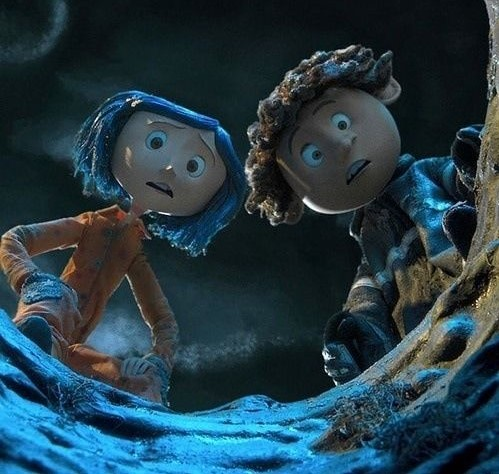
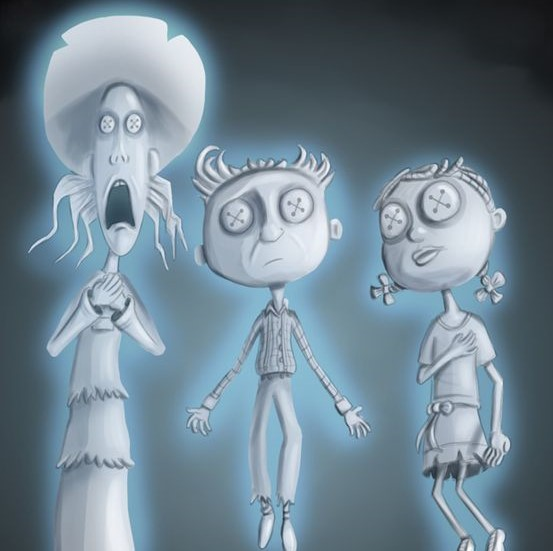
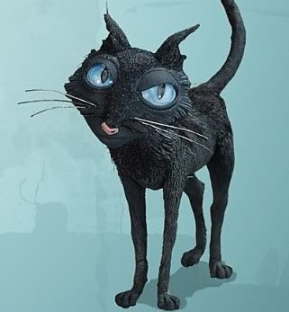
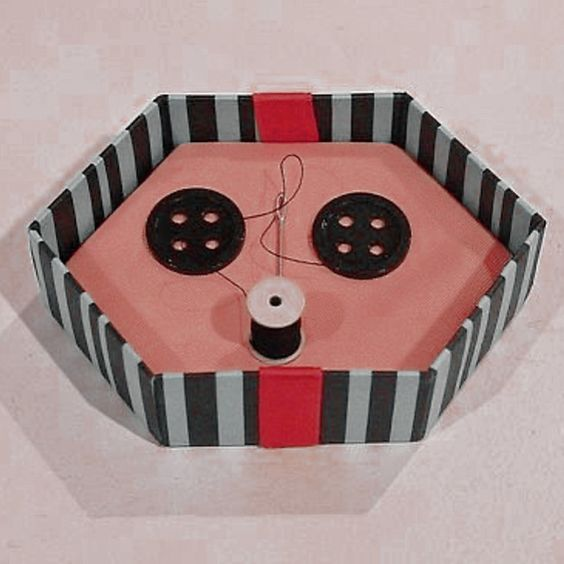

Sobre
Coraline e o Mundo Secreto
-

Sobre o Filme
O filme "Coraline e o mundo secreto" foi nossa inspiração para o site, e ele nos passa uma mensagem simples, verdadeira e inocente, e ao mesmo tempo sombria, onde a imaginação de Coraline, nos leva a um mundo de muita curiosidade e atenção.
-

Sobre o Filme
Coraline se vê refém em sua nova vida, para ela não muda quase que nada em relação aos dois mundos (sombrio, mas ao mesmo tempo bonito). O que muda na verdade é o modo de vida, quando Coraline passa para o mundo imaginário
-

Sobre o Projeto
Este projeto faz parte da Unidade Escolar ETEC Prof. Maria Cristina Medeiros, acontece no 1° ano do Ensino Médio – Integrado ao Técnico em Informática Para a Internet. Desenvolvido de julho a setembro de 2021.
O objetivo é trabalhar a interdisciplinaridade entre os componentes Língua Portuguesa e Desenvolvimento de Sites.
-

Sobre o Projeto
A ideia é desenvolver a escrita por meio da narração, assim foram criados os contos literários. Além de tudo o foco é colocar em prática os conceitos aprendidos de HTML e CSS e gerar sites responsivos que se adaptam a diferentes tamanhos de telas.
As competências socioemocionais também foram desenvolvidas neste projeto quando se trata de:
- Trabalho em Equipe;
- Criatividade;
- Pro-atividade e responsabilidade nas entregas;
-
Esconda
os seus
OLHOS!
Professoras
Professoras que auxiliaram na criação do site:
Cintia Pinho
Mestre em Informática e Gestão do Conhecimento, especialização na área de Ciências de Dados e Processamento de Linguagem natural dentro do componente de Inteligência Artificial.
Professora de Informática e Gestão de Projetos Centro Paula Souza - ETEC MCM.
Desenvolvedora Web e de Inteligência Artificial - Tecnologia Única.
Bárbara Tomázia
Profª Bárbara Tomazia Alexandre licenciada em Letras- Português e Espanhol. Pós-graduada em Psicopedagogia Institucional e em Docência no Ensino Superior. Leciono Português e Espanhol no Ensino Médio e Técnico.
Portfólio
Contos familiares
Alunas
Alunas responsáveis por desenvolver o site:

Somos estudantes da Etec Maria Cristina Medeiros em Ribeirão Pires(SP), fazemos ensino médio integrado ao curso de Informática para internet.